| 日付 | 2022年5月1日（日） - 2022年5月4日（水） | ||||
|---|---|---|---|---|---|
| 山域 | 中国の山 | ||||
| メンバー | 家族（妻、長女・11歳、長男・8歳） | ||||
| 山行形態 | 子連れ3泊4日キャンプ | ||||
| アクセス | 車、タクシー | ||||
| ルート (Map1) |
|
2日目
5時半起床。昨夜はかなり寒かった。GWの日本海側はまだまだ寒い。
日の出を迎える。本日は快晴だ。
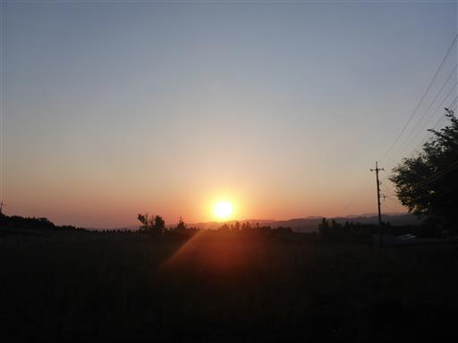
本日は伯耆大山を登る予定。駐車場は多くの車で混雑している。標高780m。
キャンプ場からの距離が遠く、到着が遅くなってしまった。
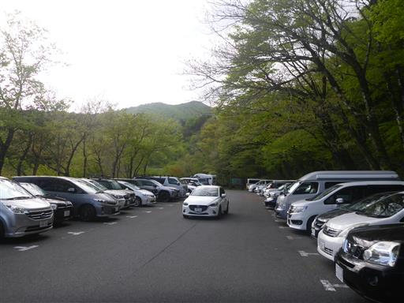
準備を整えたら登山口に移動。
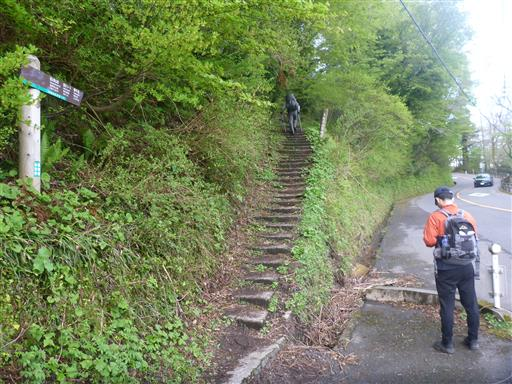
最初は階段登り。
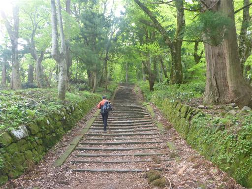
大山寺の阿弥陀堂。1552年築のそこそこ古い建物で重要文化財に指定されている。
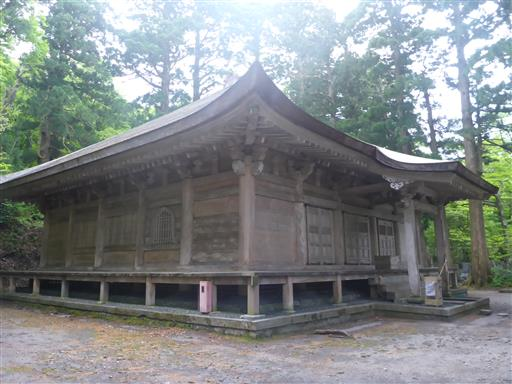
新緑の森の中を登って行く。ずっと階段が続き、結構歩きづらい登山道だ。

登山道に倒れてきそうな木の根っこ。
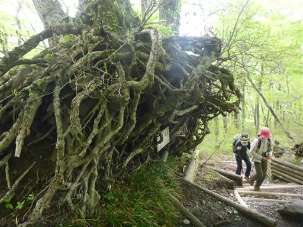
五合目に到着。空がどんよりしてきて、期待したような天気にはならなさそうだ。
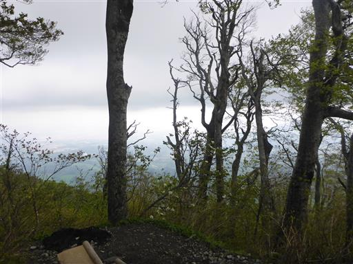
六合目避難小屋に到着。ついに雲の中に突入してしまった。
視界が完全になくなってしまう。
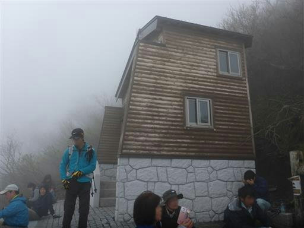
少しだけ雪が残っている。
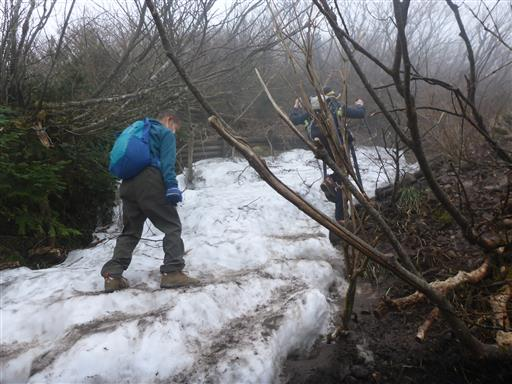
なんと途中から雨が降ってくる。快晴を期待していたのだが、
家族登山ではほぼ初めてとなるカッパを着ることになる。
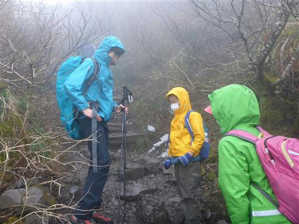
降ってくるのはすぐに雨から大粒のあられに変わる。当たるとちょっと痛い。
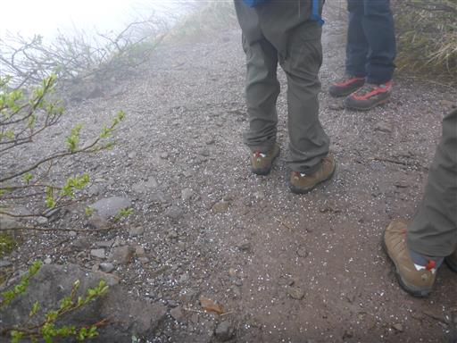
山頂に続く木道。もう視界は0だ。
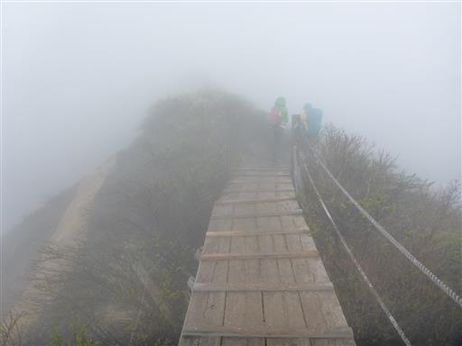
周囲はダイセンキャラボクの群落が広がっている。
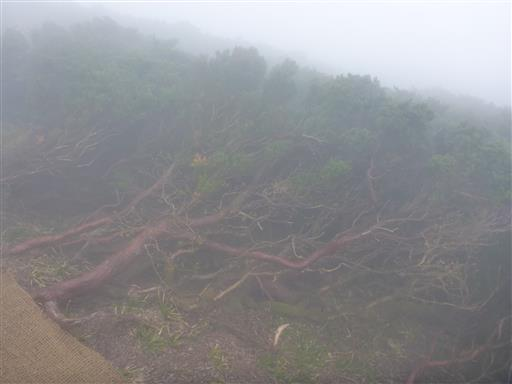
山頂直下の避難小屋を通過。

伯耆大山の山頂に到着する。標高1709m。
本当の山頂は剣ヶ峰なのだが、そこには登山道が通じていない。

山頂直下の避難小屋に移動して、少し休憩する。
人が多いのでちょっと落ち着かない。
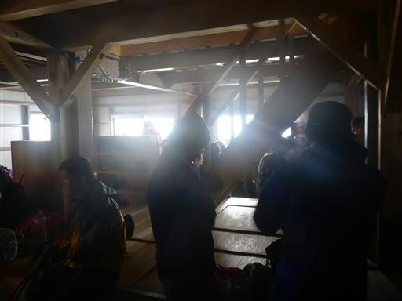
下山は少しだけ遠回りして石室を経由する道を選択。
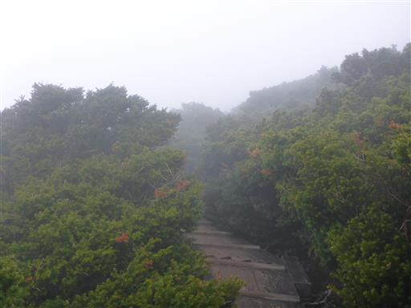
石室。天井が崩れて落ちてきそうだ。
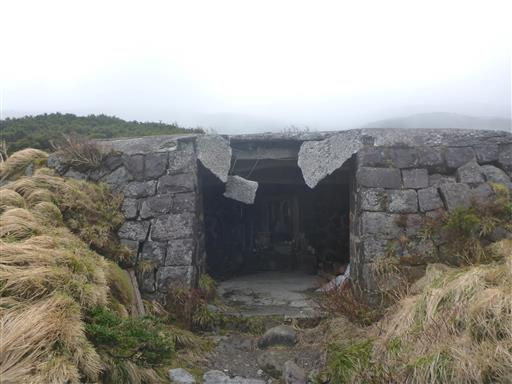
側に小さな池がある。
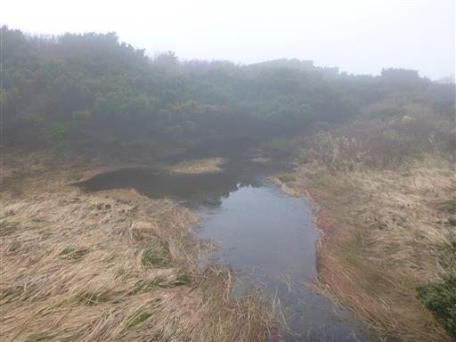
雪渓を通過。
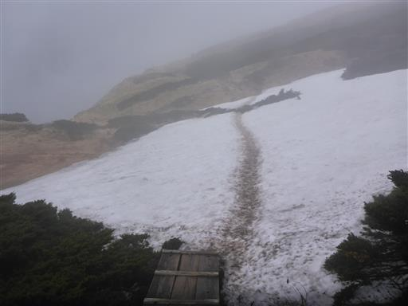
少し青空が広がり、わずかに下界の景色が広がる。
天気は回復傾向なのだろうか？
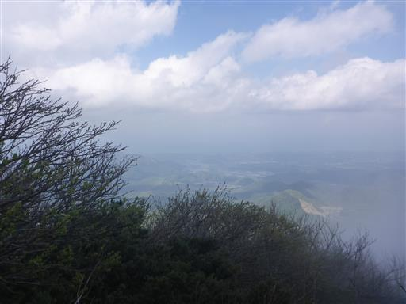
六合目避難小屋に戻ってくる。小屋の中は比較的きれいだが、かなり狭い。
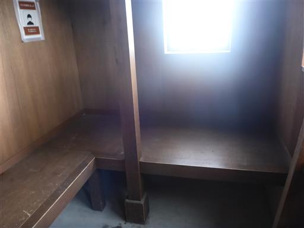
登りの時は視界が無かったが、今は雲が上がって大山の斜面がだいぶ見えるようになっている。
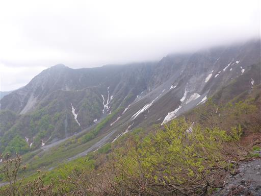
避難小屋からすぐ先の分岐点。登りと道を変えて、鳥取県推奨ルートを下る。
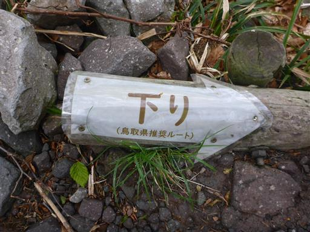
周囲には美しいブナ林が広がる。

所々で大柄な白い花が見られる。コブシだろうか？

急な坂を下りきると、大きな沢に出てくる。
ここからは屏風のように広がる大山を望むことができる。
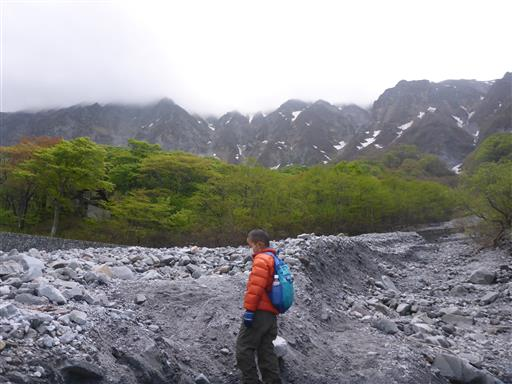
息子は堰堤に登って遊んでいる。
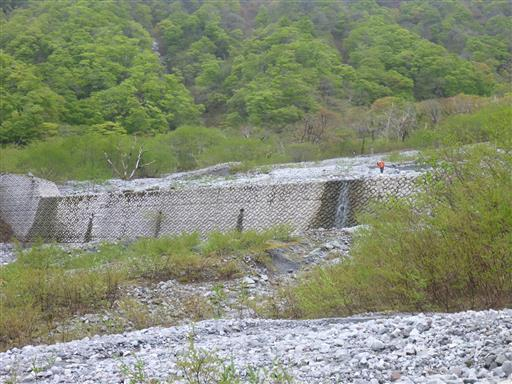
しばらく待つと、なんと雲が晴れて大山の稜線が完全に姿を現す。
嬉しいような悲しいような、複雑な気分だ。
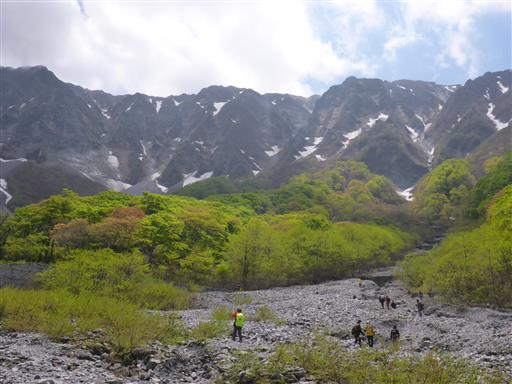
名残惜しいが下山を続ける。ここまで車で来ることができるようだ。
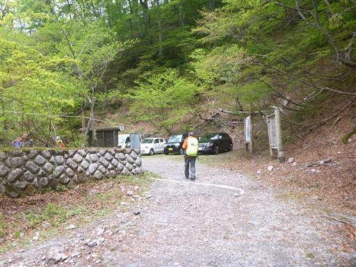
車道と外れて登山道を下っていく。
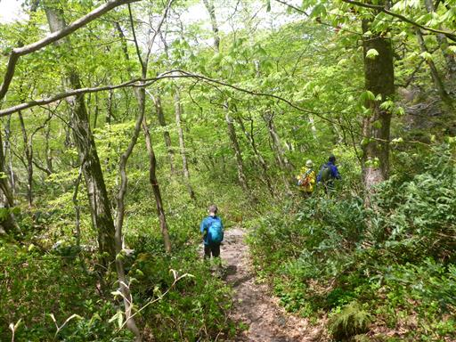
不思議な木。木の幹から瘤のようなものが垂れ下がっている。
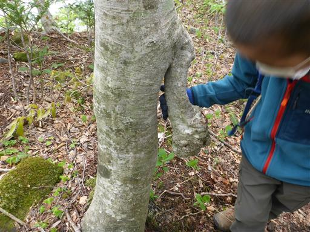
大神山神社が近づくと、周囲に巨大な杉が目立つようになる。
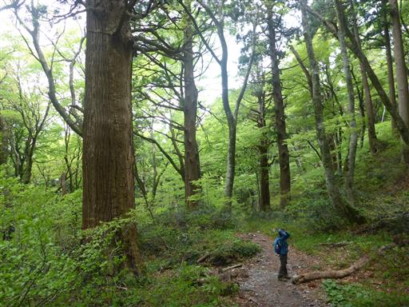
林床にはミヤマカタバミの花が咲いている。
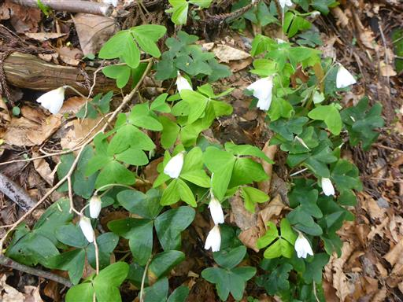
大神山神社に下山する。
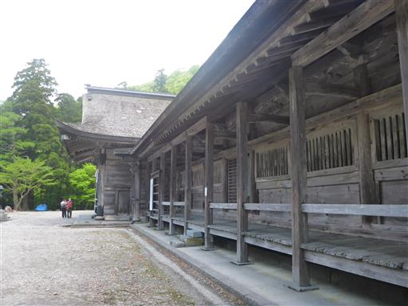
奥宮拝殿の正面に回り込む。非常に立派な神社だ。
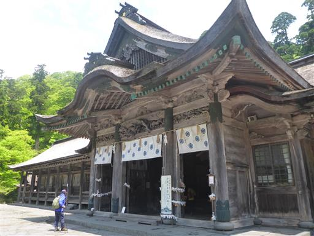
奥宮神門。この辺りはもう観光地で、観光客がチラホラ見られる。
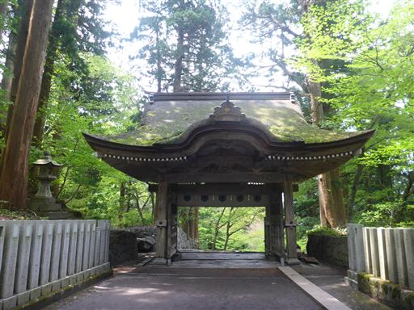
立派な狛犬。
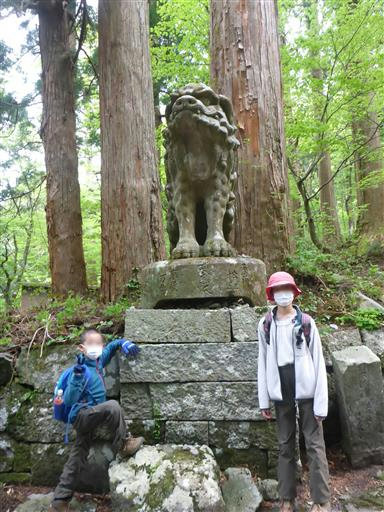
杉の巨木が林立する長い参道を下っていく。
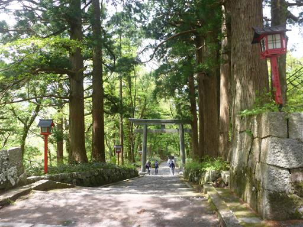
大きな石を2つの木の根が挟み込んでいる。
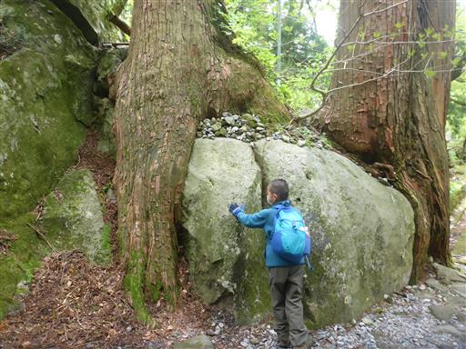
大神山神社の境内を抜け、今度は大山寺に向かう。
もともとは1つだったが、神仏分離によってバラバラになった。
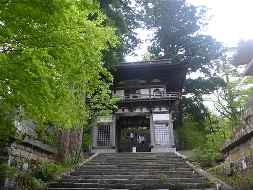
こちらも立派な杉が並んでいる。階段はかなり急だ。
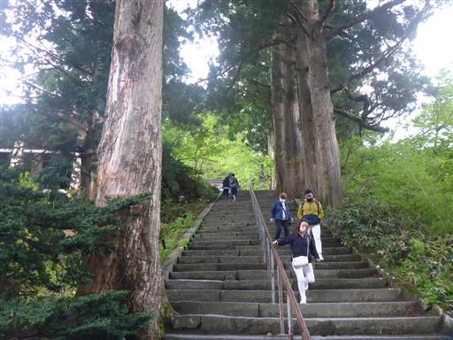
入場料を払って大山寺にお参り。こちらは少し小振りの本堂だ。
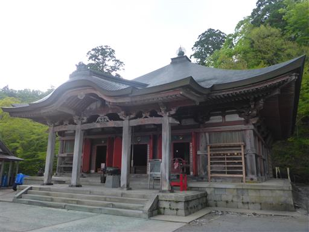
大山寺を後にする。この辺りは観光地になっていて、店が並んでいる。
ここで明日の朝食用のパンを購入。
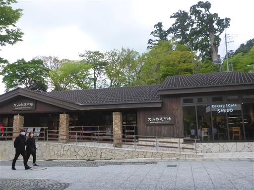
どんどん晴れていくかと思ったら、大山は再び雲の中に入ってしまった。
とにかく天気の悪い山行だった。
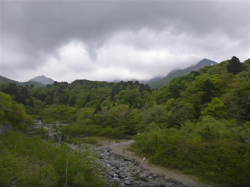
下山後は、せきがね温泉湯命館で汗を流す。
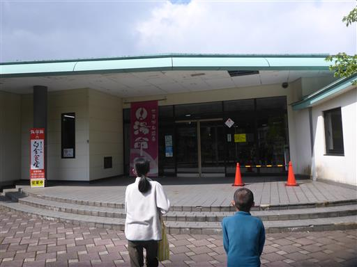
その後はコインランドリーへ。
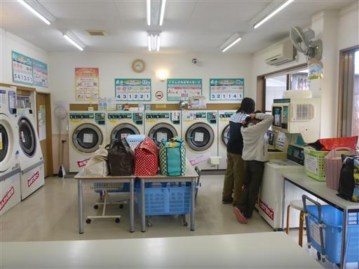
洗濯の間にスーパーで買い物。
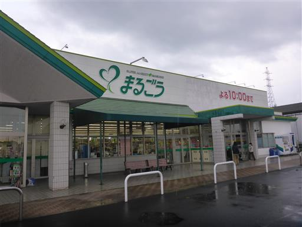
キャンプ場に戻ってくる。
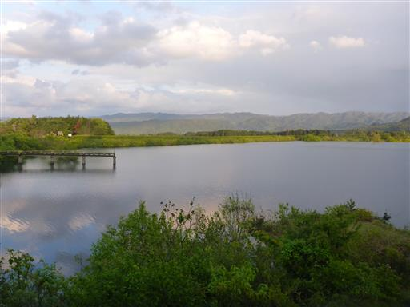
夕方には雲も取れて、ここから伯耆大山の姿がはっきりと見える。
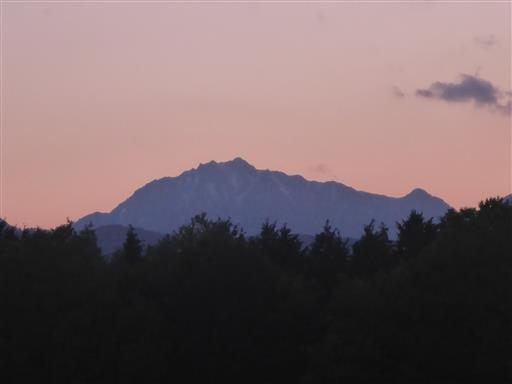